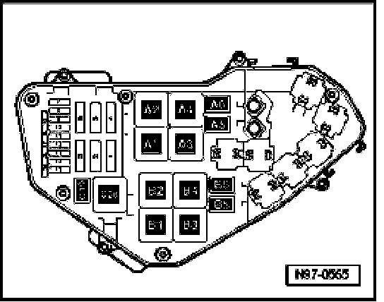
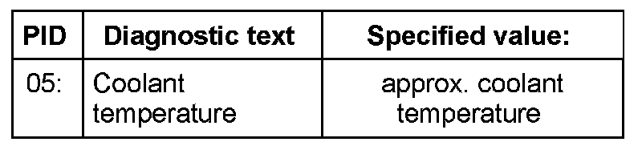
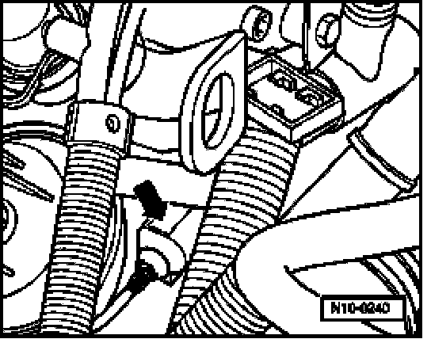
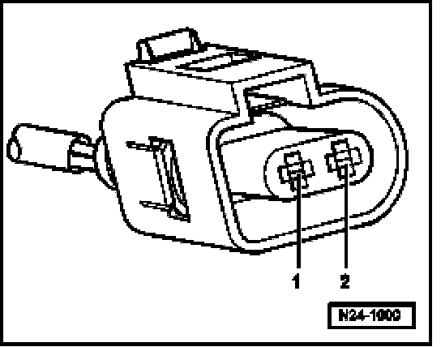

Engine Temperature Sensor: Testing and Inspection
Engine Coolant Temperature (ECT) Sensor, Checking
NOTE: Use only gold-plated terminals when servicing terminals in harness connector of sensor.
Recommended special tools and equipment
- VAG1526 multimeter or VAG1715 multimeter
- VAG1594 connector test kit
- Wiring diagram
Test requirements

- Fuses in E-box (plenum chamber, left) must be OK.
- Ground (GND) connections between engine and chassis must be OK.
- Parking brake must be engaged or else daylight driving lights will be switched on.
- For vehicles with automatic transmission, selector lever must be in -P-.
- Engine must be cold.
Function test
- Connect diagnostic tester.
- Switch ignition on.
- Under address word 33, select "Diagnostic mode 1: Checking measured values."
- Select the measuring value "PID 05: Coolant temperature".
Check specified value of coolant temperature:

If specified value is not obtained:
- Continue test according to the following table:
Indicated1) Cause
approx. -40 degree C Open circuit or short circuit to B+. Refer to Continuation of test if indication is approx. -40 degree C.
approx. 140 degree C Short circuit to Ground (GND). Refer to Continuation of test if indication is approx. 140 degree C.
1) If a temperature is indicated which differs greatly from ambient temperature of sensor, check sensor wires for contact resistance.
If specified value is obtained:
- Start engine and let run at idle. The temperature must climb uniformly
NOTE:
- The temperature increases in increments of 1.0 degree C.
- If the engine shows problems in certain temperature ranges and if the temperature does not climb uniformly, the temperature signal is intermittent and the sensor should be replaced.
- Switch ignition off.
Continuation of test if indication is approx. -40 degree C:

- Disconnect 2-pin connector from Engine Coolant Temperature (ECT) sensor -G62- (arrow).

- Bridge terminals 1 + 2 of connector using the respective adapter cables and observe the indication on display.
If temperature jumps to approx. 140 degree C:
- End diagnosis and switch ignition off.
- Replace Engine Coolant Temperature (ECT) Sensor -G62-.
WARNING:
- The cooling system is under pressure.
- Danger of scalding when opening.
- Erase DTC memory of Engine Control Module (ECM), Diagnostic mode 4: Reset/erase diagnostic data. Refer to Diagnostic Mode 4: Reset/Erase Diagnostic Data.
- Generate readiness code.
If indication remains at approx. -40 degree C:
- End diagnosis and switch ignition off.
- Check wires according to wiring diagram.
Continuation of test if indication is approx. 140 degree C:

- Disconnect 2-pin connector from Engine Coolant Temperature (ECT) sensor -G62- (arrow).
If Indication jumps to approx. -40 degree C:
- End diagnosis and switch ignition off.
- Replace Engine Coolant Temperature (ECT) Sensor -G62-.
WARNING:
- The cooling system is under pressure.
- Danger of scalding when opening
- Erase DTC memory of Engine Control Module (ECM), Diagnostic mode 4: Reset/erase diagnostic data. Refer to Diagnostic Mode 4: Reset/Erase Diagnostic Data.
- Generate readiness code.
If temperature remains at approx. 140 degree C:
- End diagnosis and switch ignition off.
- Check wires according to wiring diagram.
Checking wiring
- Connect test box to control module wiring harness, connect test box for wiring test.

- Check wires between test box and 2-pin connector for open circuit according to wiring diagram.
Terminal 1 + socket 93
Terminal 2 + socket 108
Wire resistance: max. 1.5 ohm
- Check wires for short circuit to each other, to vehicle Ground (GND) and to B+.
Specified value: infinite ohm
- Erase DTC memory of Engine Control Module (ECM), Diagnostic mode 4: Reset/erase diagnostic data. Refer to Diagnostic Mode 4: Reset/Erase Diagnostic Data.
- Generate readiness code.
If no malfunctions are found in wires:
- Replace Engine Coolant Temperature (ECT) Sensor -G62-.
WARNING:
- The cooling system is under pressure.
- Danger of scalding when opening.
- Erase DTC memory of Engine Control Module (ECM), Diagnostic mode 4: Reset/erase diagnostic data. Refer to Diagnostic Mode 4: Reset/Erase Diagnostic Data.
- Generate readiness code.
If no malfunctions are detected in the wires and the resistance values are OK:
- Replace Motronic Engine Control Module (ECM) -J220-.